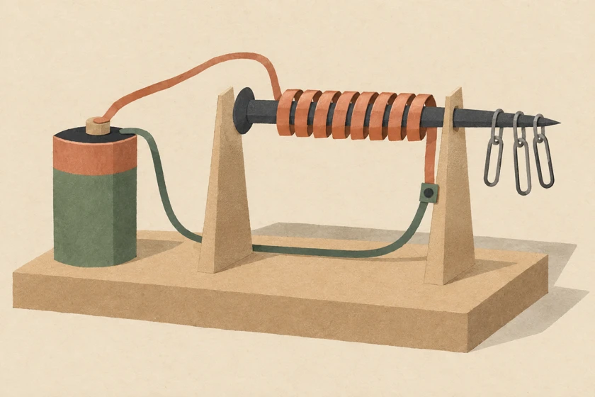

YD PHYSICS / 04 / EM4 Electricity and Magnetism
電與磁 · EM01–EM06

Interactive tools are being added. 本課題的互動工具將陸續加入。
Topic guide課題索引
- EM01Electrostatics靜電學
- EM02Circuits電路
- EM03Domestic Electricity家居用電
- EM04Electromagnetism電磁學
- EM05Electromagnetic Induction電磁感應
- EM06Alternating Current / Transformer交流電 / 變壓器